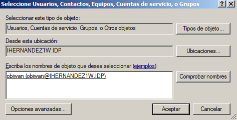
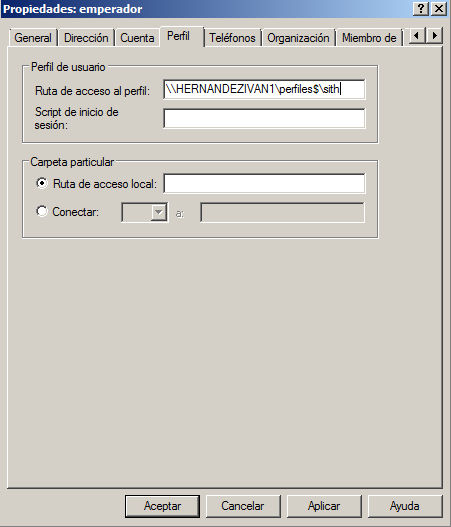
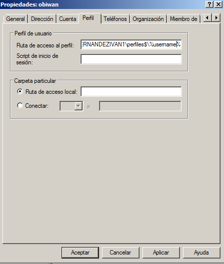

- Módulo: Sistemas Operativos
- Título del trabajo PDC WinServer
- Componentes del grupo: Iván José Hernández Regalado
- Curso Académico: 2013/2014
- Fecha de entrega: 8 de Abril de 2014
Configuración:
Antes de empezar con las copias de seguridad configuramos la máquina virtual en modo puente y le establecemos una ip
estática con valor 172.16.108.131/16, el gateway y el DNS 172.16.1.1, también establecemos el grupo de trabajo "AULA108".
Tras hacer esto último instalamos el Cygwin junto con el servidor OpenSSH.
- Ejecutamos "dcpromo" en la ventana de ejecutar para empezar con la instalación del servidor DNS

- Elegimos crear un dominio nuevo porque es la primera vez que vamos a configurarlo en este servidor si hubiera instalado otro
y quisieramos modificarlo pondríamos el de arriba.
- Le asginamos un nombre al Servidor de dominio de raíz debe de ser un nombre que no se pueda repetir, por ejemplo nuestro
nombre acabado en .IDP
- Al acabar lo anterior seguimos eligiendo nuestro Windows instalado en este caso un 2008 Server R2.

- En el siguiente paso no tocamos nada y le damos siguiente no nos hace falta modificar nada.
- Ya estaría terminada la instalación.
- Empezamos creando los grupos jedi y sith para luego meter los usuarios dentro de cada grupo. Para crearlos entramos en Herramientas
administrativas > Usuarios y grupos de Active Directory.
- Ahora creamos los usuarios yoda, obiwan y quigon para el grupo yedi y para el grupo sith creamos los usuarios
vader, maul y emperador.
- Para meter los usuarios en cada grupo vamos al grupo y en propiedades añadimos sus respectivos miembros.

Antes de empezar configuramos las máquinas virtuales en modo puente y le establecemos una ip
estática con valor 172.16.108.231/16, el gateway 172.16.1.1. y en DNS ponemos la ip de nuestro servidor DNS en este caso
172.16.108.131 y la otra con la ip 172.16.108.031.
- Para empezar ponemos diferentes nombre de equipo para que no haya problemas de conexión
y ponemos en dominio el nombre del servidor de DNS hecho en el paso 1.1 de esta práctica. Al meter el DNS de nuestro
servidor se nos abrira una ventana para entrar con un usuario y una contraseña
y ponemos un usuario o el administrador del servidor para empezar la conexión.
- Continuaremos poniendo perfiles móviles y obligatorios para cada grupo, perfiles móviles para jedi y obligatorios
para sith. Creamos las carpetas para que se metan dentro los datos de cada usuario y esten guardados en la máquina de dominio
y no en la usuaria. Y les ponemos permisos de control total a todos.
- Luego en cada usuario dentro de Active Directory y vamos a perfil y ponemos la ruta de la carpeta anterior para que se guarden los
datos en ese sitio. Para los usuario del grupo jedi creamos una carpeta para cada uno, para los usuario de sith lo ponemos todos
en la carpeta sith.

- Comprobamos en una máquina windows 7 si conectandonos con un usuario cualquiera del dominio nos funciona.
- Para terminar con la práctica vamos a poner un permiso de acceso en tiempo para que los jedi solo puedan entrar de 8:00h a 14:00h y
los sith de 14:00h a 20:00h de la siguiente manera. En la pestaña de cuenta nos sale una opción de Horas de inicio de sesión... y la
modificamos.
- Ahora comprobamos en un equipo si no deja entrar con una cuenta de sith fuera del horario indicado, si es así ya estaría
correctamente realizado.
- Y lo anterior con un usuario jedi que si está dentro del horario de acceso.